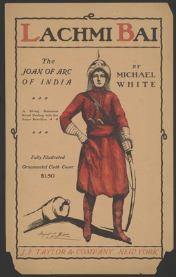
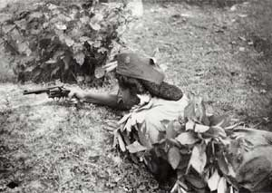

RANI LAXMI BAI
Queen of Jhansi

Died: June 17, 1858 (aged 22) near Gwalior India
Role In: Indian Mutiny
MEMOIR OF OUR BELOVED RANI LAXMI BAI
The Teen Life
 Brought up in the household of the peshwa (ruler) Baji Rao II,
Lakshmi Bai had an unusual upbringing for a Brahman girl. Growing up with the boys in the peshwa’s court,
she was trained in martial arts and became proficient in sword fighting and riding.
Brought up in the household of the peshwa (ruler) Baji Rao II,
Lakshmi Bai had an unusual upbringing for a Brahman girl. Growing up with the boys in the peshwa’s court,
she was trained in martial arts and became proficient in sword fighting and riding.
History of Jhansi, 1842 – May 1857
After the death of the Maharaja in November 1853, because Damodar Rao (born Anand Rao) was an adopted son, the British East India Company, under Governor-General Lord Dalhousie, applied the Doctrine of Lapse, rejecting Damodar Rao's claim to the throne and annexing the state to its territories. When she was informed of this she cried out "Main apni Jhansi nahi doongi" (I shall not surrender my Jhansi). In March 1854, Rani Lakshmibai was given an annual pension of Rs. 60,000 and ordered to leave the palace and the fort. According to Vishnu Bhatt Godse, the Rani would exercise at weightlifting, wrestling, and steeplechasing before breakfast. An intelligent and simply-dressed woman, she ruled in a businesslike manner.
The Revolt of 1857
Beginning of the Rebellion
 On 10 May 1857, the Indian Rebellion started in Meerut. When news of the rebellion reached Jhansi, the Rani asked the British political officer, Captain Alexander Skene, for permission to raise a body of armed men for her protection; Skene agreed to this. The city was relatively calm amid the regional unrest in the summer of 1857, but the Rani conducted a Haldi Kumkum ceremony with pomp in front of all the women of Jhansi to provide assurance to her subjects, and to convince them that the British were cowards and not to be afraid of them.
Siege of Jhansi
From August 1857 to January 1858, Jhansi under the Rani's rule was at peace. The British had announced that troops would be sent there to maintain control, but the fact that none arrived strengthened the position of a party of her advisers who wanted independence from British rule.
Flight to Gwalior
The leaders (the Rani of Jhansi, Tatya Tope, the Nawab of Banda, and Rao Sahib) fled once more. They came to Gwalior and joined the Indian forces who now held the city (Maharaja Scindia having fled to Agra from the battlefield at Morar). They moved on to Gwalior intending to occupy the strategic Gwalior Fort and the rebel forces occupied the city without opposition. The Rani was unsuccessful in trying to persuade the other rebel leaders to prepare to defend Gwalior against a British attack which she expected would come soon.
Rani of Jhansi Regiment
 A women's unit of the Indian National Army was named the Rani of Jhansi Regiment. In 1957 two postage stamps were issued to commemorate the centenary of the rebellion. Indian representations in novels, poetry, and film tend towards an uncomplicated valorization of Rani Lakshmibai as an individual solely devoted to the cause of Indian independence.[48] The Rani of Jhansi Regiment was a unit of the Indian National Army (INA)